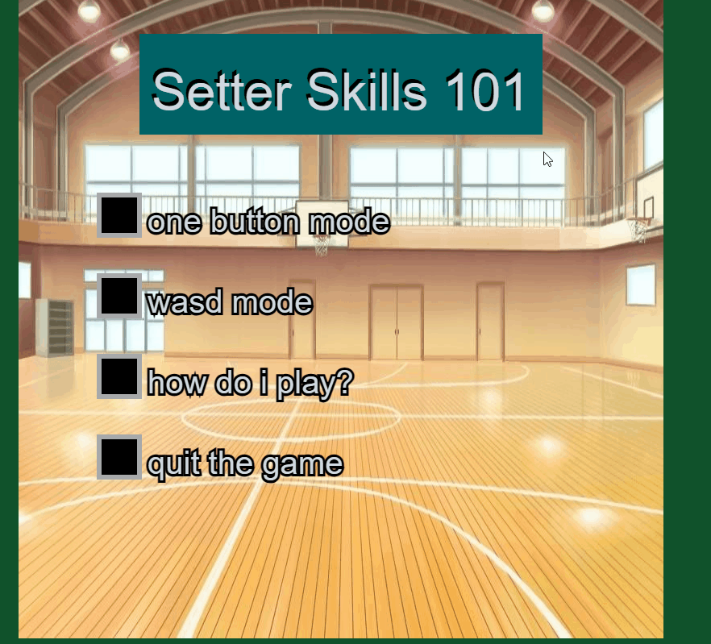
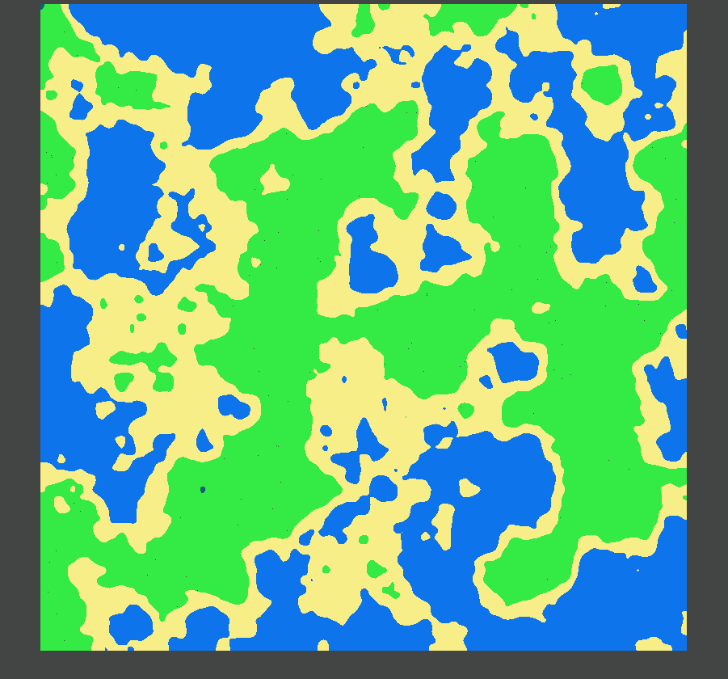
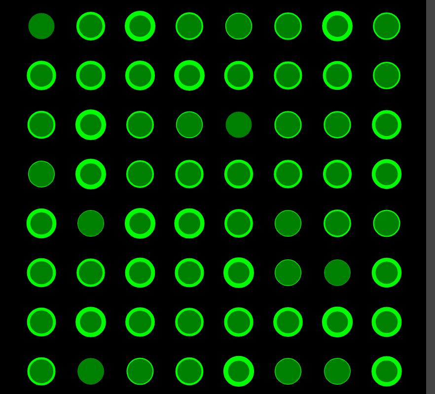
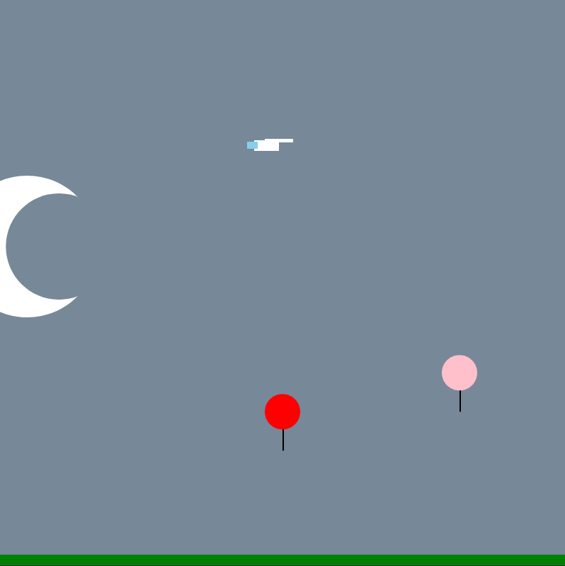

Isaiah Padgett
Welcome to my portfolio!, my name is Isaiah and I am a computer science student at the University of Mary Washington.
Below are some of my favorite projects from different classes, such as Creative Coding, CPSC 240 and soon to be more.
Setting Simulator Game

This is a gif from my final project in my creative coding class.
I made a setting simulator because I love volleyball and wanted to portray that in my code.
linked here!
Random Landscape Generator

This is a gif from a project I created my creative coding class.
This was really fun to make, I love generating cool stuff and I liked learning how to do this.
linked here!
Binary Grid

This is a gif from a project I created my creative coding class.
This is a random grid generator, I tried to do something that looked matrix-y.
linked here!
Art in time

This is a png from a project I created my creative coding class.
I wanted to make a cool canvas that is based off of real time.
linked here!